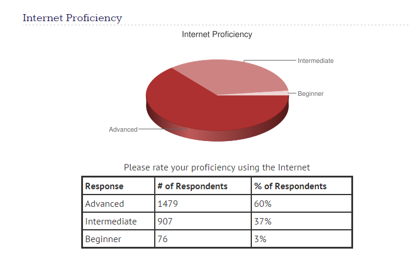

Accessibility
Inital Commit pt. II
What is accessibility?
- Who Needs Accessibility?
- Why is it important
- Current Regulations
- Some Considerations
Who needs accessibility?
- About 15% of the worlds population have some form of disabillity.
- Rates of disabillity are increasing due to population aging.
Low Vision or blindness are the majority

Advanced Users.


Additional Benefits
- The navigation is logical with proper heading structure
- All users benefit from cleaner organization and alternative sources to get information
- Legal Obligation
- Its the right thing to do
Current Regulations
- Americans with Disability Act (ADA). Does not directly cover web accessibility but students have filed claims against schools. Examples
- Section 508. Applies to federal government sites or those that receive funding from the government.
- The Accessibility for Ontarians with Disabilities Act. Steep fines of up to $100,000 per day for content that is not in compliance
- More to come...
How to?
Plan heading structure early
Good Example

Consider Contrast Issues
WCAG AA: Contrast ratio of 4.5: 1 for normal text and 3:1 for large text.
Not meeting criteria


Very time consuming to do after the fact.
Challening UI for Accessibility
Controls that update multiple pieces of content